Baseline Training Progress
Baseline Final Renders

This assignment explores differentiable volume rendering, Neural Radiance Fields, VolSDF, and 3D Gaussian Splatting.
I implemented ray generation, point sampling, and emission-absorption volume rendering. For each ray, the rendering weights are
αi = 1 - exp(-σi Δti)
Ti = ∏j<i(1 - αj)
wi = Ti αi
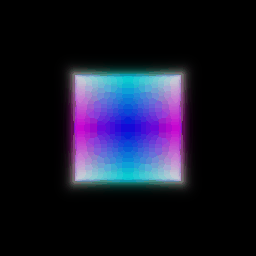
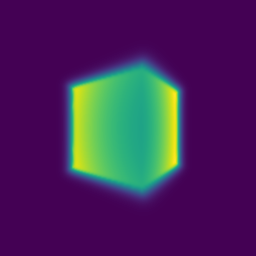
I optimized the center and side lengths of an analytic box using RGB supervision. The model was trained for 1000 epochs using Adam with learning rate 5e-4, 4096 randomly sampled rays per iteration, and MSE loss.
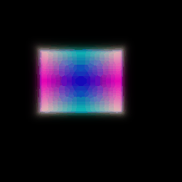
Optimized box center: TODO
Optimized side lengths: TODO
I replaced the analytic volume with a NeRF MLP. The model uses 6-frequency positional encoding for 3D coordinates, producing a 39-dimensional encoding. The network has 6 layers with hidden dimension 128 and a skip connection at layer 3. Density uses ReLU and RGB uses Sigmoid.
| Setting | Value |
|---|---|
| Epochs | 250 |
| Learning rate | 5e-4 |
| Image resolution | 128 x 128 |
| Samples per ray | 128 |
| Ray batch size | 1024 |
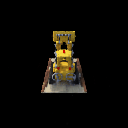
I added viewing direction to the color branch of NeRF while keeping density view-independent. The ray direction is encoded using 2 harmonic frequencies and concatenated with the learned geometry feature before predicting color.
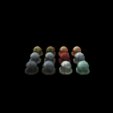
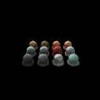
The difference is relatively subtle at 128 x 128 resolution. The view-dependent model produces smoother and more localized highlights on reflective objects. However, stronger view dependence can also make the model overfit to the training views, since color can vary independently with direction.
I implemented hierarchical sampling using a coarse and fine NeRF. The coarse network evaluates 64 uniform samples. Its rendering weights define a PDF used to draw 64 additional importance samples. The coarse and fine samples are merged and sorted, producing 128 samples for the fine network.
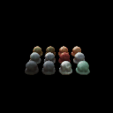
Hierarchical sampling places more samples around regions with high rendering weight instead of wasting samples in empty space. The visual improvement is small at this resolution, while computation increases because both the coarse and fine networks must be evaluated.
I implemented a neural signed distance field and converted SDF values into density using the VolSDF formulation.
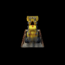
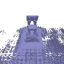
| Parameter | Value |
|---|---|
| Alpha | 10.0 |
| Beta | 0.05 |
| Eikonal weight | 0.02 |
| Epochs | 250 |
Alpha controls the density scale inside the object, while beta controls the width of the transition around the zero level set.
A higher beta creates a smoother and wider density transition, making optimization easier because gradients exist farther from the surface. However, this can produce less accurate geometry.
A lower beta produces a sharper transition and can recover a more accurate surface, but optimization becomes harder because the useful gradient region is smaller.
The recovered bulldozer geometry captures the major structure, but there are also spurious surfaces in weakly supervised empty regions.
I implemented a simplified 3D Gaussian rasterizer. The main steps are:
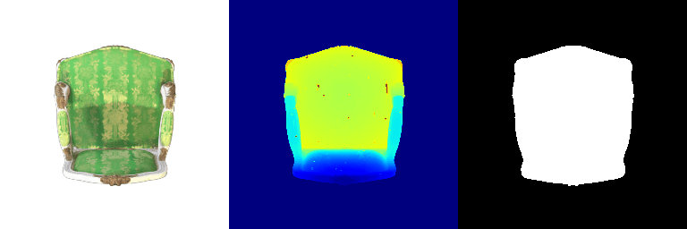
I trained 10,000 isotropic Gaussians initialized using the provided truck point cloud. The loss is L1 and Adam is used with separate learning rates for each parameter group.
| Parameter | Learning Rate |
|---|---|
| Means | 0.001 |
| Scales | 0.005 |
| Opacities | 0.01 |
| Colors | 0.01 |
Iterations: 1000
Mean PSNR: 29.878
Mean SSIM: 0.942
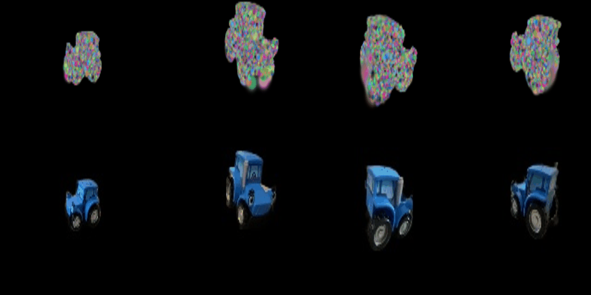
Because the Gaussians are initialized directly from a clean point cloud, the scene geometry is already approximately correct at the start of training. The optimizer mainly needs to refine colors, scales, opacities, and positions.
Part 5 uses only the degree-0 spherical harmonic coefficient, giving each Gaussian a fixed view-independent color. In this extension I use degree-3 spherical harmonics, with 16 basis functions and 48 RGB coefficients per Gaussian.
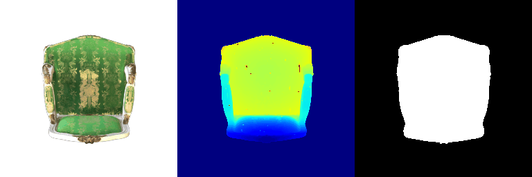
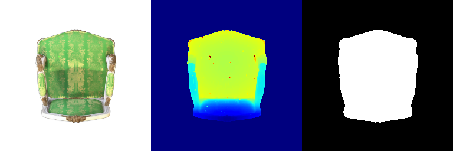
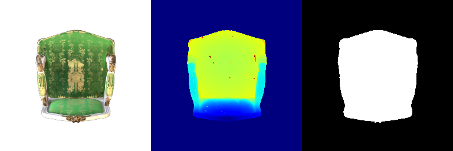
In the SH rendering, the green upholstery is darker and more saturated and the gold pattern has stronger contrast. The DC-only result appears flatter.
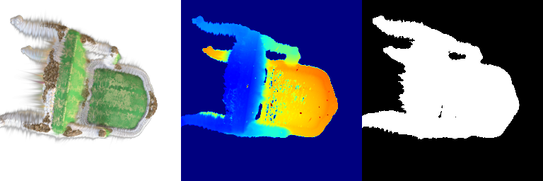
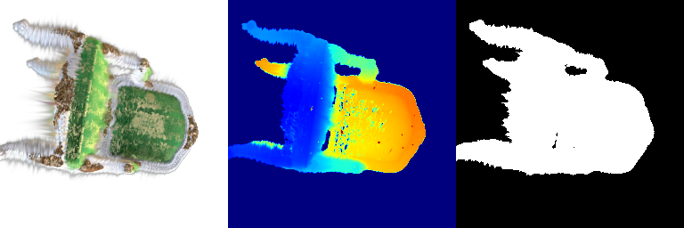
At this oblique viewing angle, the SH result produces a stronger highlight along the edge of the backrest. This is a view-dependent effect that cannot be represented using one fixed color per Gaussian.
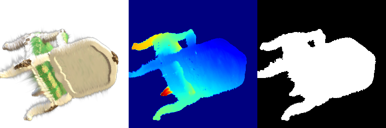
The wooden underside is almost identical between the two methods. This shows that mostly diffuse regions can already be represented well using only the degree-0 term.
For the harder materials scene, I initialized 10,000 Gaussian means randomly near the origin instead of using a clean point cloud. The baseline uses the same optimizer, learning rates, L1 loss, and isotropic Gaussian representation as Part 6.
| Setting | Baseline |
|---|---|
| Initialization | 10,000 random Gaussians |
| Gaussian type | Isotropic |
| Iterations | 1000 |
| Loss | L1 |
| Mean PSNR | 18.122 |
| Mean SSIM | 0.677 |
The baseline is significantly harder to optimize than Part 6 because the Gaussians must first discover the scene geometry from random initialization. After 1000 iterations, the major object locations begin to appear, but the reconstruction remains blurry and contains missing or smeared regions.
TODO: Add improved Q7.2 method, modifications, PSNR, SSIM, and training progress GIF.